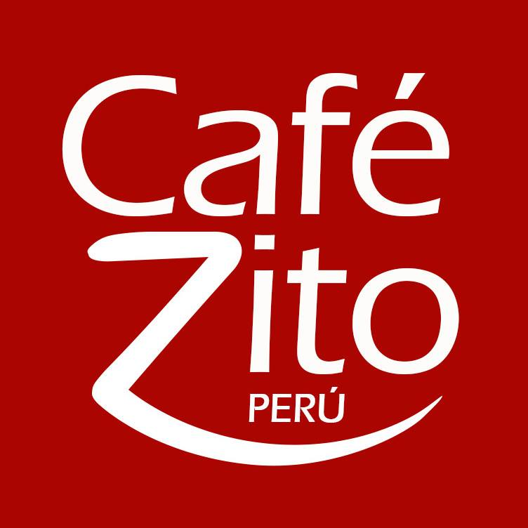

CAFEZITO PERU
El mejor cafe del mundo se encuentra en OXAPAMPA, PASCO -PERU
CAFEZITO PERU es elaborado con granos seleccionados de nuestros cafetales ubicados en el Valle de ACUZAZU en OXAPAMPA, PASCO -PERU a una altura de 1900 msnm. En la selva de Niebla, ideal para el proceso Orgánico desde la siembra a la cosecha, tostado y envasado que garantiza el sabor y aroma 100% Peruano.
PEDIDOS 